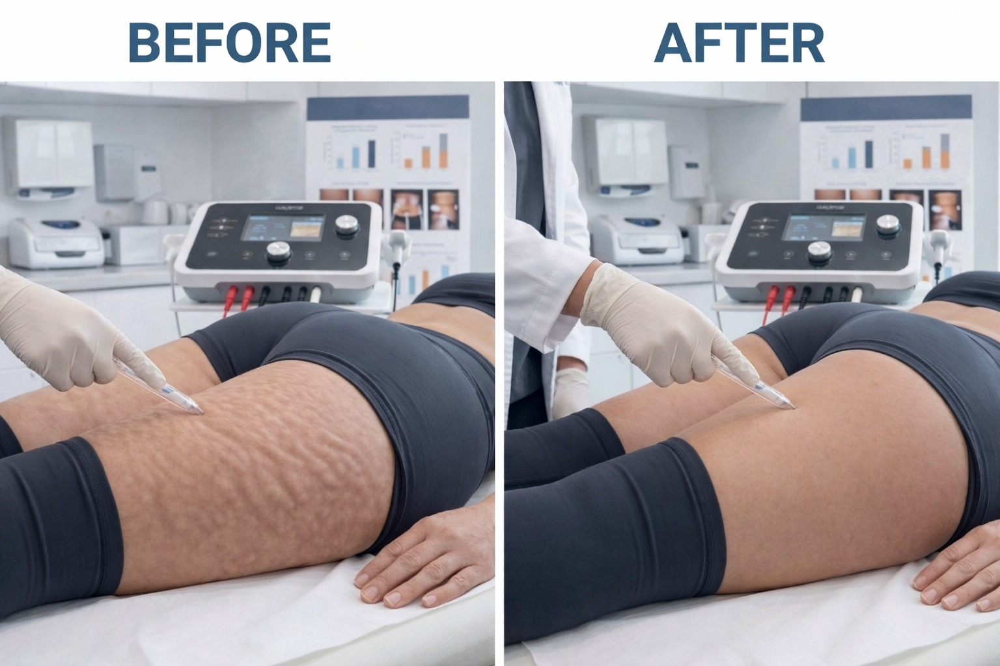
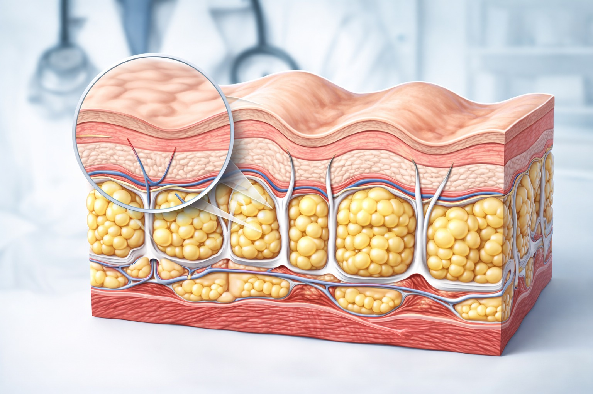

פרוטוקול מתקדם שמטפל בגורמים האמיתיים — לא רק בסימפטום

צלוליט הוא תופעה ביולוגית — לא רק בעיה אסתטית. הוא מופיע ב-80–90% מהנשים, ללא קשר למשקל או לגיל. רוב הטיפולים נכשלים כי הם מתמקדים רק בסימפטום הנראה לעין, בלי לטפל במה שגורם לו.
ברויאל-מד אנו מטפלים בצלוליט בגישה מקיפה — שמטפלת בשלושת הגורמים העיקריים במקביל.
צלוליט נוצר משילוב של שלושה גורמים:
תאי שומן גדולים לוחצים כלפי מעלה דרך רקמת החיבור ויוצרים את מראה "קליפת התפוז".
סיבי קולגן חלשים אינם מחזיקים את השומן במקומו — ומאפשרים לו לבלוט. אצל נשים, הסיבים מסודרים אנכית (אצל גברים — לסירוגין), לכן הן רגישות יותר.
זרימה לקויה מובילה לצבירת נוזלים ורעלנים ברקמה — מה שמחמיר את המראה.

הפרוטוקול שלנו מטפל בכל הגורמים במקביל:
השיפור הוא הדרגתי ומצטבר — תוצאות ניכרות לאחר 6–8 טיפולים, עם שיפור נוסף לאורך הסדרה.
להתאמת פרוטוקול אישי על בסיס אבחון מקצועי — ניתן לתאם שיחת ייעוץ ללא עלות וללא התחייבות.
תיאום תור טלפוני ללא עלות